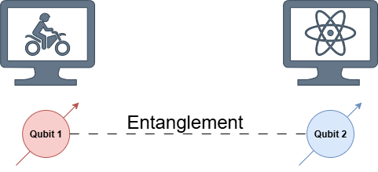

Challenge 2: Building a Quantum Teleporter
We saw on the first day that a Bell effect could be used to move the state of a qubit from Alice's quantum computer to Bob's quantum computer. This example was interesting, but it did not tell us how to actually perform a Bell effect. The goal of this activity is to figure out what is really going on with quantum teleportation.
Using the Bell pairs from Challenge 1: Creating a Bell Pair, you will now consider the problem of setting up secure communication for your bike sharing network. We will consider a simplified example where there is a single bike station (left in the figure below) connected to our bike sharing network (right in the figure below). We will start by providing the bike station with a qubit whose state is entangled with a qubit in the bike sharing network.
If we perform the quantum teleportation protocol using this Bell pair, then we can securely transfer quantum information from the bike station to the bike sharing network. However, this comes at the cost of destroying the Bell pair. This means that we would actually need many Bell pairs for ongoing communication, but we will not worry about that for now. The rest of the challenge outline is as follows.

Citations: This challenge is based on the work of Charles Bennett, Gilles Brassard, Crépeau Crépeau, Richard Jozsa, Asher Peres, and William Wootters in 1993. The ZX perspective on teaching quantum teleportation is inspired by the work of Selma Dündar-Coecke, Lia Yeh, Caterina Puca, Sieglinde M.-L. Pfaendler, Hamza Waseem, Thomas Cervoni, Aleks Kissinger, Stefano Gogioso, and Bob Coecke in 2023.